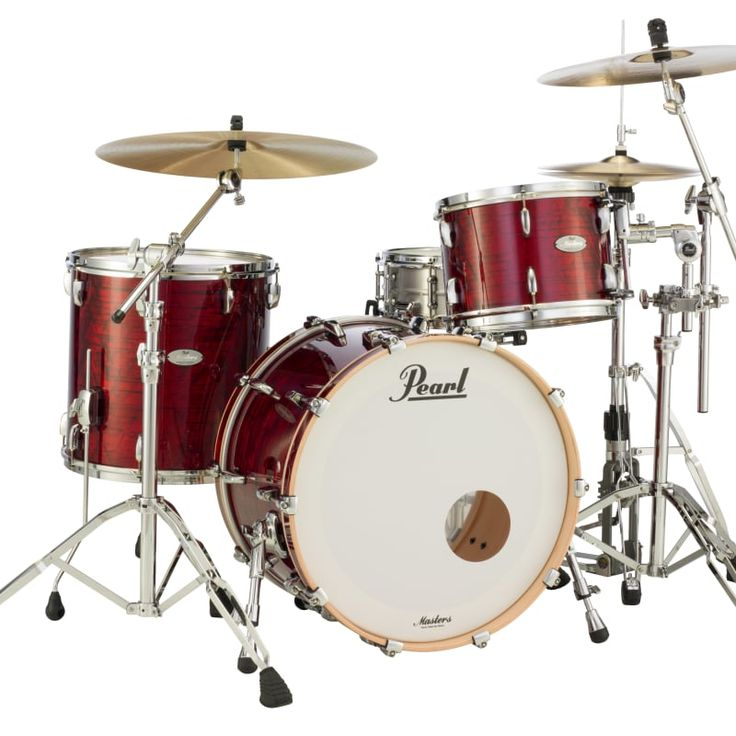
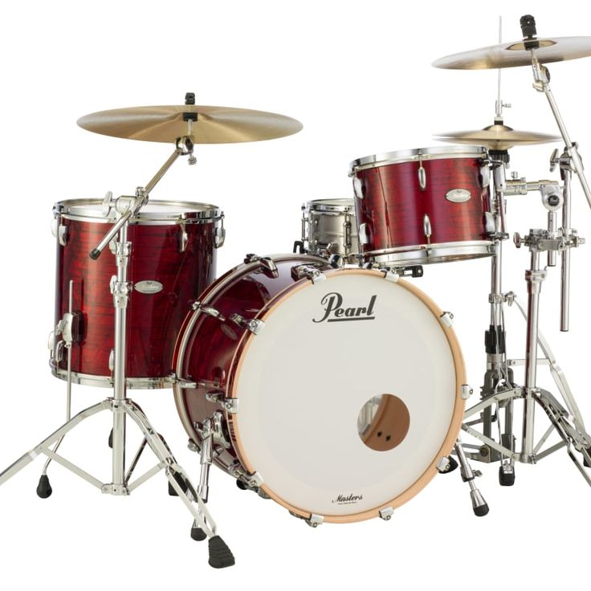

What Are Percussion Instruments?
Percussion instruments produce sound by being struck, shaken, or scraped. Examples include drums, xylophone, tambourine, and cajón.
Percussion instruments produce sound by being struck, shaken, or scraped. Examples include drums, xylophone, tambourine, and cajón.
